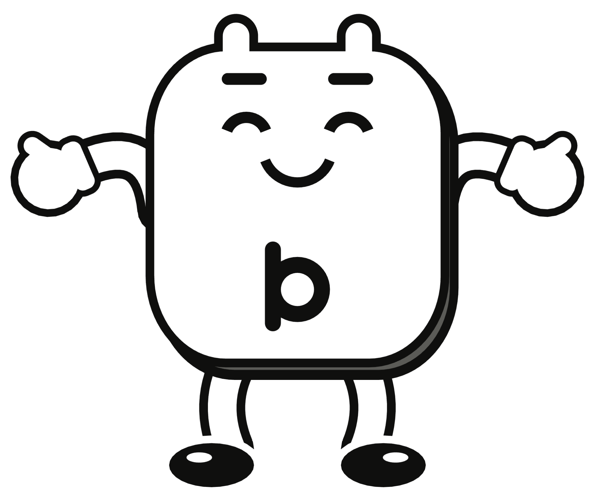
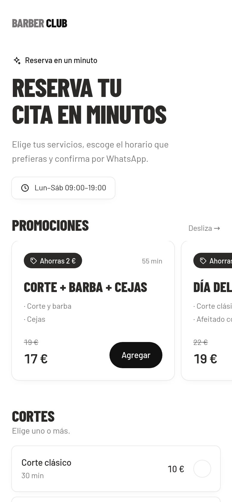

Estructura base
Oct. a dic. 2026
Costos mínimos, presupuestados como montos mensuales, para arrancar y validar el mercado.
Presupuesto estáticoContabilidad VI · Contabilidad de costos
Cómo cambian los costos de una empresa de software por suscripción según sus proyecciones de ventas.

[Nombres de los estudiantes] · Prof. [Nombre del docente] · Octubre de 2026
El negocio
Una plataforma para que salones de belleza, barberías y centros de estética reciban reservas en línea. El ingreso se acumula mes a mes con cada cliente que se queda.
Cómo se proyectan las ventas

La propuesta
Oct. a dic. 2026
Costos mínimos, presupuestados como montos mensuales, para arrancar y validar el mercado.
Presupuesto estáticoEne. a sep. 2027
Con los datos del trimestre se separan los costos fijos y variables y se mide el costo por cliente.
Presupuesto flexible · CVUOct. 2027 a sep. 2028
Estructura completa: remuneración de la dirección, servicios contables y procesos más eficientes.
Costeo por actividadesFase 2 · Meses 4 a 12
Fase 3 · Segundo año
Para cerrar
Desde la fase 2, los costos crecen con el número de clientes por la parte variable.
A más clientes, menor costo por cliente: $5,11 en el base y $3,53 en el optimista.
Con menos ventas la empresa opera cerca del equilibrio y necesita una estructura austera.
Recomendaciones